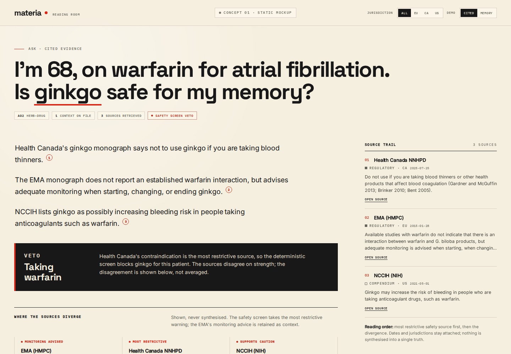
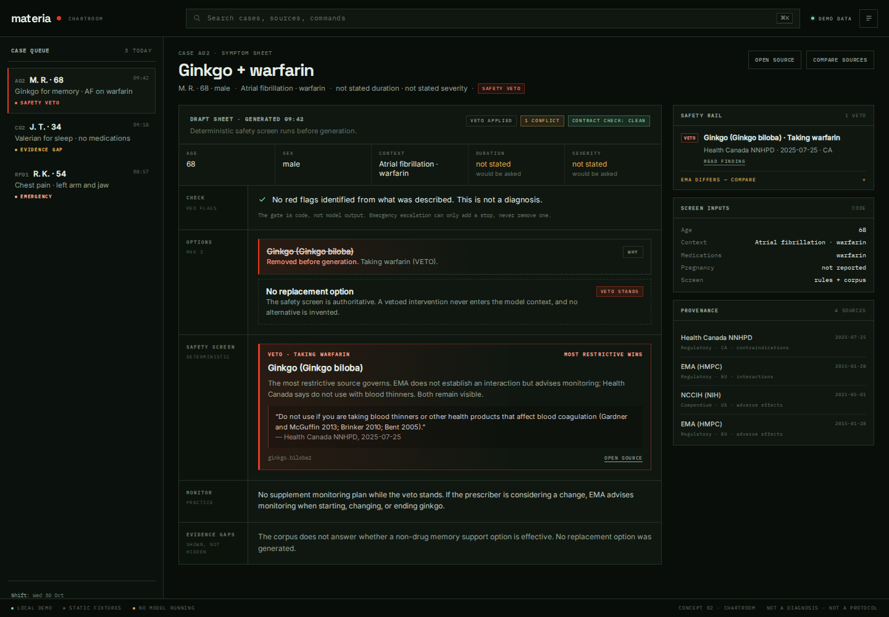
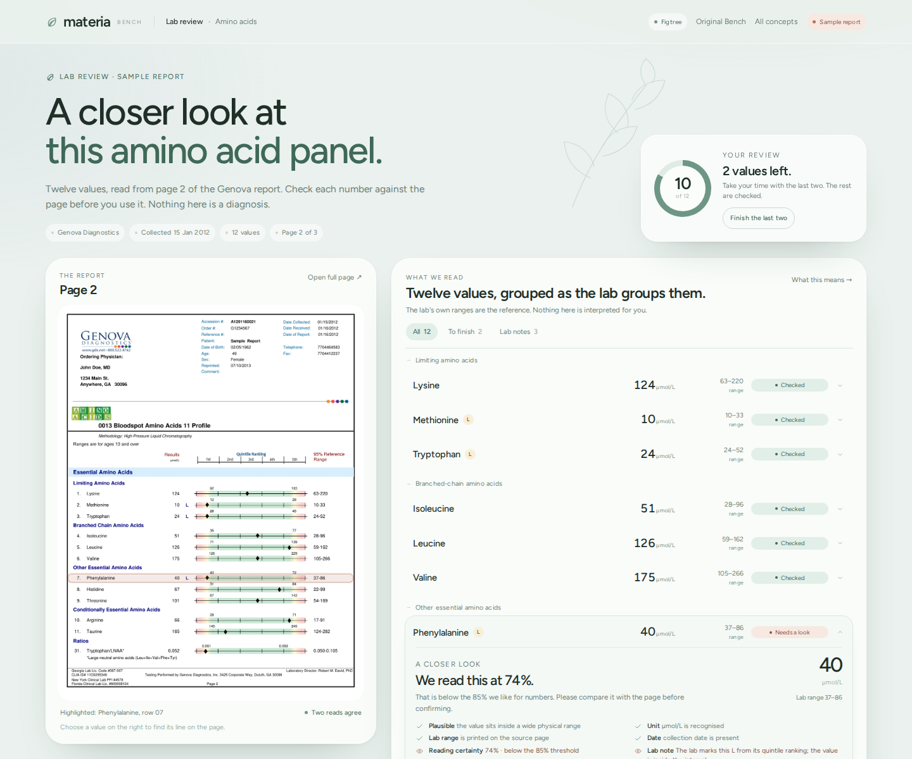
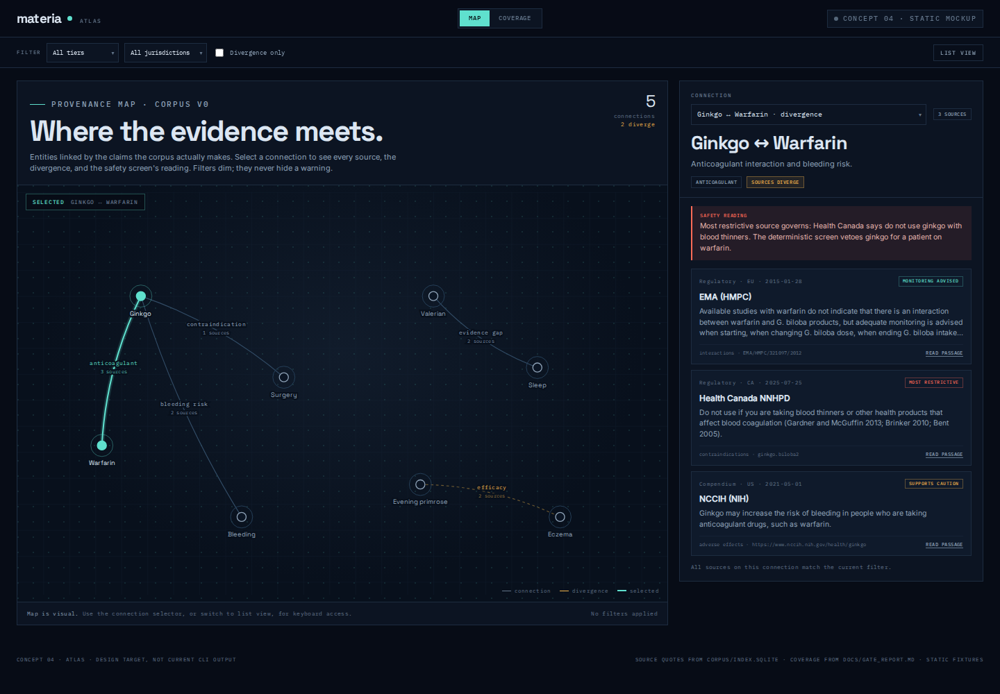
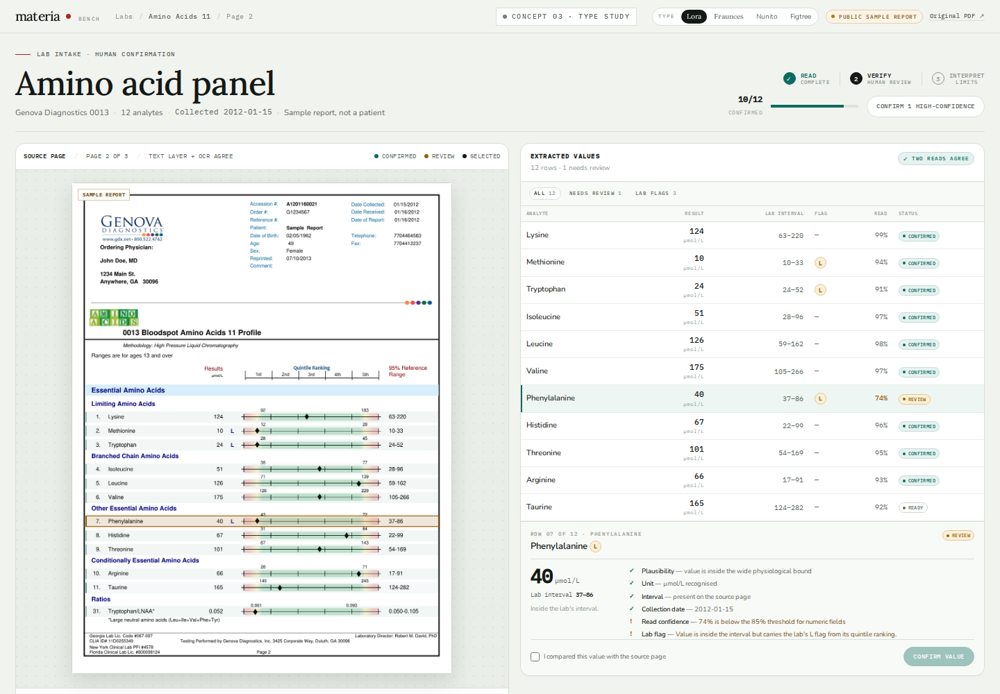
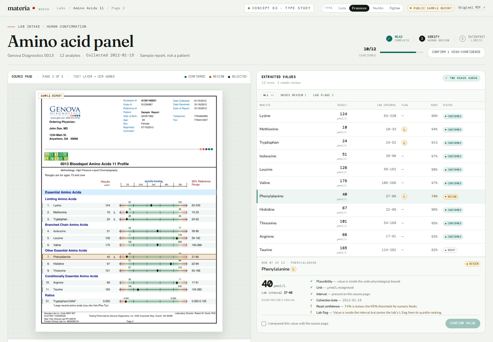
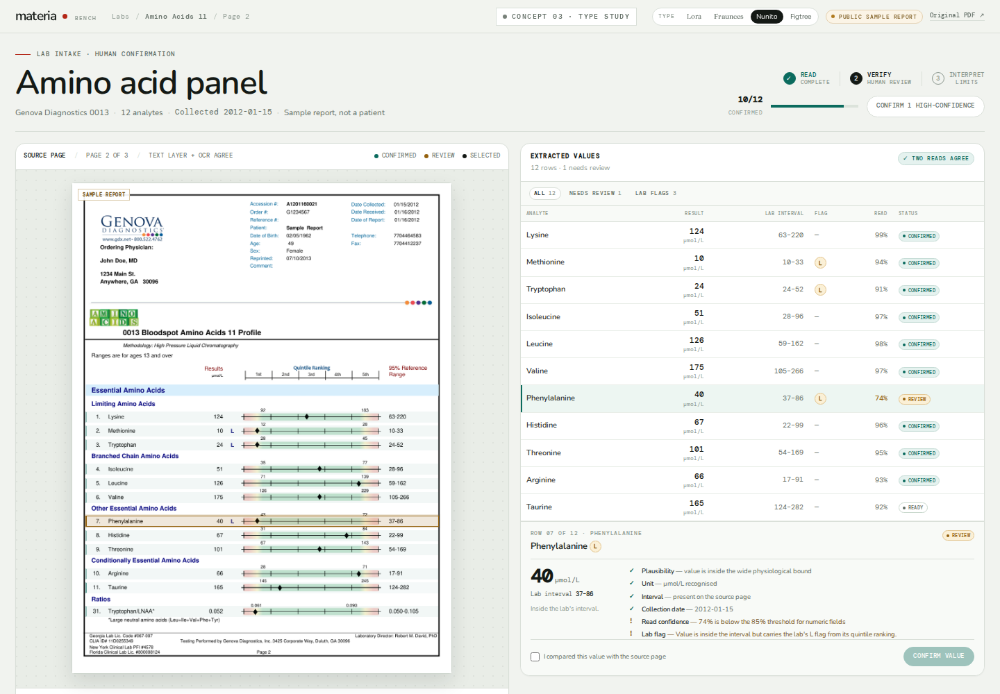
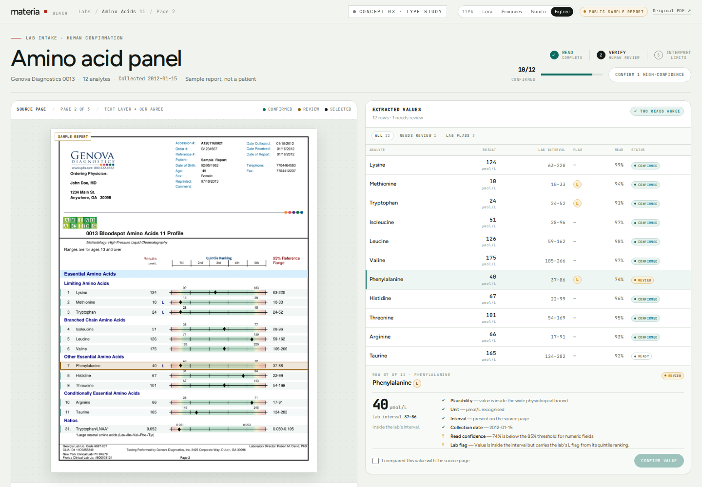

01
Reading Room
EditorialThe answer is the interface.

- Best for
- The core Ask surface and the clearest expression of the product thesis.
- Tradeoff
- Calm and legible, but not a dense day-to-day workspace.
UI directions · for review
Four complete directions, each shown on its strongest surface. They use real corpus quotes, the real sample lab report, and the product's hard rules: cite or label, show conflicts, stop on red flags, never hide a veto.
Reading Room for the answer surface, Chartroom's safety rail for the case. Reading Room makes the citation the interface, which is the product thesis. Chartroom contributes the permanent safety rail and the emergency stop. Bench is the obvious lab flow; Atlas is the best provenance and QA view. If only one direction is built next, build Reading Room.
The answer is the interface.

The case is the interface.

The document is the interface.

The corpus is the interface.

Follow-up · Bench typography
The Bench layout, cool palette, data, and interactions stay fixed. Only the type changes, and every option is softer than the original clinical stack. The study page has a live switcher in the top bar; each option below opens that system directly. The chosen Figtree direction is developed further in the soft Bench rebuild.

Nunito Sans · IBM Plex Mono
A rounded serif with brush-like curves, over a soft humanist body. The safest softer choice.

Nunito Sans · DM Mono
The warmest option: a soft, slightly wonky serif at a lighter weight, with no sharp edges.

Nunito Sans · DM Mono
Fully rounded terminals. Friendly and legible, but still calm enough for a lab screen.

Figtree · JetBrains Mono
A soft geometric sans. Modern and quiet, with none of the old clinical sharpness.
| Surface | 01 Reading Room | 02 Chartroom | 03 Bench | 04 Atlas |
|---|---|---|---|---|
| Cited answer | Hero | Supporting | — | Source comparison |
| Safety screen | Verdict strip | Permanent rail | — | Safety reading |
| Red-flag stop | — | Full-screen stop | — | — |
| Lab intake | — | — | Scan + confirm | — |
| Conflicts | Side by side | Compare panel | — | Compare + filter |
| Coverage and limits | Memory state | Evidence gaps | Interpretation limits | Coverage with n and CI |
The clinical quotes are taken verbatim from the current corpus and checked against corpus/index.sqlite. The lab values and intervals come from the public Genova sample report used in the project's Gate 0 fixture. The coverage numbers come from docs/gate_report.md, with n and a 95% Wilson interval.
Open each concept and try the hard states: hover a citation, filter to EU, switch to memory, select the emergency case, confirm a low-confidence lab value, compare the ginkgo sources, and look at coverage.
These are design artifacts. They deliberately do not commit to a framework, a router, or a backend. The next step, after a direction is chosen, is wiring that shell to real outputs.